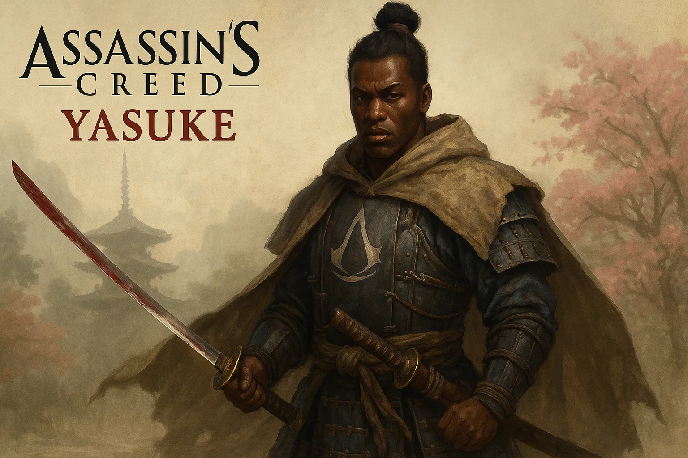
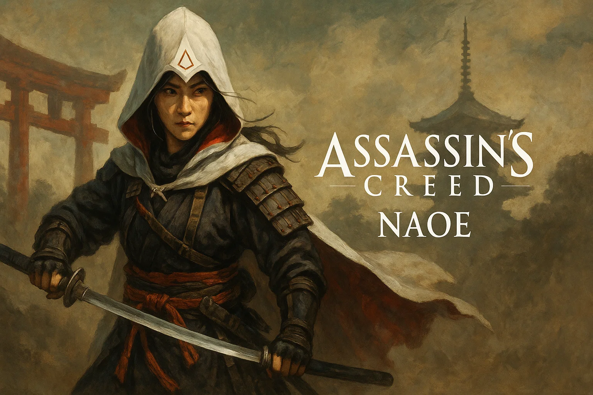

Release Date
February 14, 2025
Platforms
PC, PS5, Xbox Series X/S
Setting
Feudal Japan
Era
Late 16th Century
Shadows of Feudal Japan
Assassin's Creed: Shadows transports players to war-torn feudal Japan. Experience dual protagonists — the stealthy assassin Naoe and the powerful samurai Yasuke — as they fight through political strife, epic landscapes, and evolving loyalties in one of the franchise's most immersive worlds.
Story Highlights
- Play as both Naoe the Shinobi and Yasuke the Samurai
- Experience two distinct playstyles: stealth and combat
- Explore feudal Japan during the Sengoku period
- Navigate political intrigue and clan warfare
Core Features
Stealth & Combat Blend
Master both silent assassinations and powerful katana strikes with two distinct styles.
Feudal Japan
Roam ancient castles, villages, and bamboo forests as political chaos unfolds.
Dual Protagonists
Play as both Naoe the Shinobi and Yasuke the Samurai in a revolutionary narrative.
Notable Characters

Yasuke

Naoe
Gameplay Mechanics
Dual Protagonist System
Switch between Naoe's stealth-focused gameplay and Yasuke's powerful combat style. Each character offers unique abilities, weapons, and approaches to missions.
Dynamic Seasons
Experience Japan's beauty across changing seasons. Weather and time of day affect stealth, combat, and exploration in this living, breathing world.
Game Gallery


Legacy & Impact
Assassin's Creed Shadows represents the franchise's long-awaited journey to feudal Japan. With dual protagonists offering contrasting playstyles, the game promises to deliver both the stealth gameplay fans love and intense samurai combat. The setting during the Sengoku period provides a rich backdrop of political intrigue, honor, and warfare.
Step Into the Shadows
Unleash the power of stealth and honor in feudal Japan.
Preorder Now